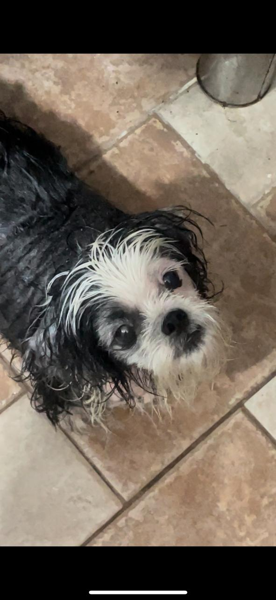

Sobre Mim
E um pouco mais sobre minha jornada...

Desde cedo, sempre senti um forte desejo de ajudar os outros. Ainda adolescente, aos 15 anos, comecei a me envolver em campanhas de doação, motivada por um sentimento de empatia e responsabilidade em relação ao próximo. Esse primeiro contato despertou em mim uma paixão que nunca mais diminuiu. Foi nesse período que compreendi o quanto pequenas ações podem transformar vidas, não apenas de quem recebe a ajuda, mas também de quem oferece. Minha formação como médica veterinária abriu portas para unir minha profissão ao meu propósito. Sempre acreditei que o cuidado com os animais está profundamente conectado ao bem-estar das pessoas. Por isso, participei de diversas campanhas de castração gratuita, mutirões de saúde animal e ações de conscientização sobre a posse responsável. Em clínicas gratuitas, pude atender animais que, de outra forma, não teriam acesso a cuidados, proporcionando conforto e qualidade de vida a eles e às suas famílias. Além da área veterinária, sempre busquei diversificar minha atuação no voluntariado, acreditando na importância de contribuir em diferentes frentes. Já participei de ações em comunidades carentes, ajudando a organizar eventos de arrecadação de alimentos, roupas e brinquedos. Também me envolvi em projetos educativos, como dar suporte a ONG de crianças carentes, o que me permitiu testemunhar de perto o impacto que um bom dia e o lazer tem na construção de futuros mais promissores. Uma experiência que marcou minha trajetória foi quando coordenei um grupo de voluntários para levar cuidados veterinários a uma área rural. Foi desafiador, mas extremamente recompensador, pois além de atender os animais, pudemos orientar as famílias sobre manejo sustentável e prevenção de zoonoses. Essa iniciativa me ensinou que, muitas vezes, o conhecimento compartilhado é tão valioso quanto o atendimento em si. No voluntariado, aprendi que cada ato, por menor que pareça, tem um impacto poderoso. Não se trata apenas de doar tempo ou habilidades, mas de se conectar com realidades diferentes, de abrir o coração e criar pontes. Em cada experiência, conheci pessoas incríveis, tanto entre os beneficiados quanto entre os voluntários. Essas conexões fortaleceram meus valores e me mostraram que, juntos, podemos construir um mundo mais justo e solidário. Escolhi o voluntariado como tema de projetos acadêmicos porque ele reflete minha essência. A bondade e a preocupação com os outros são características que sempre guiaram minha trajetória pessoal e profissional. E, mais do que isso, acredito que compartilhar essas histórias e experiências pode inspirar outras pessoas a se envolverem também. Afinal, o voluntariado é uma troca: enquanto transformamos o mundo ao nosso redor, também somos transformados por ele. Hoje, meu desejo é continuar ampliando meu impacto, encontrando novas formas de ajudar e contribuindo com causas que promovam um futuro melhor, tanto para as pessoas quanto para os animais. Pretendo, no futuro, organizar projetos mais estruturados, como clínicas itinerantes e ações de educação ambiental, que impactem diretamente comunidades vulneráveis. Vejo o voluntariado não como algo que faço esporadicamente, mas como uma parte essencial de quem eu sou e do legado que quero deixar. Enquanto isso, sigo aproveitando cada oportunidade de ajudar, com a certeza de que o que construímos juntos como voluntários é muito maior do que qualquer esforço individual. Afinal, transformar vidas – inclusive a minha – é o maior presente que o voluntariado me deu.
Laila: Um Amor que Mudou Nossas Vidas
Laila entrou na minha vida de forma inesperada, mas transformou tudo ao seu redor. Ela foi resgatada pela ONG Amigos de Francisco após ser descartada de uma criação de shih-tzus, onde era usada como matriz. Aos dois anos, com uma história de abandono e marcas deixadas pela dermatite atópica, ela encontrou um novo começo ao meu lado. Naquele momento, eu também estava precisando recomeçar. Tinha acabado de perder minha primeira cachorra, uma idosa adorada de 14 anos que esteve ao meu lado desde o início da minha jornada. Foi ela quem despertou em mim o amor pelos animais e motivou minha primeira escolha profissional: ser veterinária. Sua ausência deixou um vazio enorme e uma tristeza profunda. Eu não sabia se conseguiria amar outro animal novamente. Mas então veio Laila, e com ela, uma nova chance de amar. Adotá-la foi como dar e receber uma segunda chance, e juntos começamos a curar nossas feridas. Cada carinho e cada superação dela me lembram por que o cuidado e a dedicação aos animais são tão importantes. Laila também me inspira no voluntariado. Saber que tantos animais como ela precisam de resgate, amor e uma nova oportunidade de vida reforça o propósito de ajudar. Ela não é apenas minha companheira; é um lembrete vivo de como o voluntariado transforma vidas – a dela, a minha e a de muitos outros seres que só precisam de uma chance para florescer.
Algumas das minhas experiências como voluntária
Hamburgada do bem
Participei de uma ação incrível chamada Hamburgada do Bem, e foi uma experiência marcante. Desde o momento em que cheguei, senti a energia positiva e a união de todos os voluntários, cada um comprometido em fazer a diferença no dia de crianças que muitas vezes não têm oportunidades como essa. O que mais me tocou foi ver os sorrisos das crianças. Elas estavam tão felizes, tão cheias de energia, aproveitando cada atividade preparada com tanto carinho. Mais do que distribuir hambúrgueres, era sobre levar amor, atenção e criar memórias felizes para elas. Cada etapa do evento tinha um propósito, desde ajudar na organização das filas, até a entrega dos hambúrgueres. Fiquei na parte da cozinha, fazendo as carnes de hambúrguer. Senti que, mesmo com pequenos gestos, estávamos oferecendo algo muito maior. No final do dia, voltei para casa com uma sensação de gratidão. Conheci muitas pessoas com propósitos semelhantes. É emocionante perceber como ações simples podem ter um impacto tão grande. Participar da Hamburgada do Bem foi uma lembrança de que, ao nos doarmos, ganhamos muito mais do que damos. Quero repetir essa experiência e continuar espalhando essa corrente do bem.
Hospital Veterinário Anhembi Morumbi
Participar como voluntária no Hospital Veterinário Anhembi Morumbi foi uma experiência transformadora. Sempre tive um amor enorme pelos animais, e estar em um ambiente onde eles são cuidados e tratados com tanta dedicação me fez sentir que estava contribuindo para algo realmente especial. No dia a dia, o trabalho envolvia ajudar na organização dos atendimentos, apoiar as equipes durante os procedimentos e, em alguns momentos, oferecer um pouco de conforto para os tutores que estavam preocupados com seus pets. Era desafiador, mas também extremamente recompensador. Cada animal tratado, cada tutor acolhido, era um lembrete do impacto que podemos ter na vida deles. Algo que me marcou muito foi a oportunidade de aprender com os profissionais e estudantes da área. Ver o cuidado técnico aliado ao carinho e respeito pelos animais me inspirou ainda mais a valorizar o nosso trabalho e a importância do voluntariado nesse contexto. Voltar para casa depois de um dia no hospital era sempre com o coração cheio. Saber que, de alguma forma, contribui para a saúde e bem-estar de tantos animais reforçou o quanto ações assim têm poder. Foi uma experiência que me ensinou muito, não só sobre os animais, mas também sobre empatia e responsabilidade.
ONG Encontrei um Amigo
Participei de uma campanha de castração promovida pela ONG Encontrei um Amigo, e foi uma oportunidade de colocar minha formação em Medicina Veterinária em prática, contribuindo para o bem-estar animal e para a saúde pública. Foi um dia intenso e extremamente gratificante. Ajudei diretamente na triagem dos animais, avaliando suas condições antes do procedimento e orientando os tutores sobre o pós-operatório. Além disso, acompanhei parte dos procedimentos, garantindo que tudo fosse realizado com segurança e cuidado. O que mais me marcou foi a conscientização dos tutores. Muitos deles estavam ali porque entenderam a importância da castração para evitar crias indesejadas, reduzir o abandono e melhorar a qualidade de vida dos pets. Poder dialogar com essas pessoas, esclarecendo dúvidas e reforçando os benefícios da castração, me fez perceber o impacto que o conhecimento técnico pode ter na comunidade. Essa experiência reforçou meu amor pela Medicina Veterinária e minha vontade de continuar utilizando meu aprendizado para transformar a vida dos animais e de suas famílias. Foi mais uma prova de que ações como essa fazem toda a diferença.